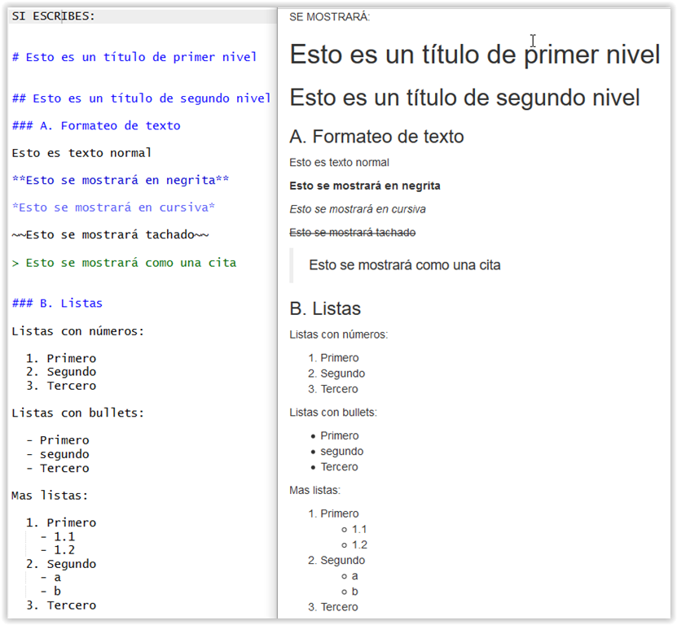

Documentos Rmarkdown (WIP)
Pedro J. Pérez
2020-04-06
1. Introducción
El proceso habitual para hacer un informe (o unas transparencias) en el que aparezcan gráficos o tablas resumen de algún análisis estadístico consiste en :
- Escribir el texto en un programa (Word, Powerpoint, Prezi, etc.)
- Realizar los cálculos estadísticos y gráficos en otro programa (R, Stata, Eviews, etc.)
- Pegar los gráficos y tablas en el documento de texto.
Este proceso tiene ciertas desventajas: dificulta la investigación reproducible, puede ser tedioso de rehacer si por ejemplo cambian ligeramente los datos, etc.
En R es posible realizar todo el informe, tanto la escritura del texto como la realización de los cálculos y gráficos, en un único documento. Hay varias formas de hacerlo, pero nos centraremos en los documentos RMarkdown (.Rmd).
Los documentos RMarkdown (.Rmd) facilitan mucho la realización de informes y transparencias ya que permiten combinar texto, código y resultados de la evaluación del código en un único documento. Si por ejemplo cambian los datos sólo habría que cambiar la ruta a los nuevos datos y el informe (gráficos, tablas etc…) se volvería a generar automáticamente con los nuevos datos.
La razón para hacer los análisis reproducibles no sólo es cumplir con los estándares científicos, que también, sino también hay un interés personal para el analista. Para entenderlo puedes ver el siguiente video de 1’44’’ que muestra una de las principales ventajas de usar documentos .Rmd.
Hace poco David Keyes pregunto en Twitter a la comunidad R cuales eran los principales beneficios de usar ficheros .Rmd para tus investigaciones/informes:
Help me out #rstats hive mind. I've been asked to explain the benefits of RMarkdown. I'm developing a list on a continuum from simple (i.e. do what you currently do, just better) to complex (i.e. completely transform how you work). Here 'tis:
— David Keyes (@dgkeyes) March 1, 2019
Con las respuestas al tweet, David elaboró este post.
Ya hemos trabajado con algunos documentos Rmarkdown (.Rmd); de hecho, todos los tutoriales del curso (incluido éste que estás viendo) se han elaborado usando ficheros .Rmd. Los tutoriales se escriben en ficheros RMarkdown, pero estos ficheros .Rmd se convierten a html, que suele ser el formato final en el que se muestran los tutoriales. En RStudio el proceso de conversión de .Rmd a .html consiste simplemente en pinchar un botón; además, simplemente cambiando una linea podemos convertir los documentos .Rmd a una gran variedad de formatos: html, pdf, word, ioslides, beamer, etc…
Si quieres ver algunos ejemplos de la gran variedad de formatos a los que puedes transformar un documento .Rmd ve a la siguiente galería. Para iniciarte en el universo Rmarkdown puedes consultar R Markdown: The Definitive Guide.
Proceso para convertir los .Rmd a otro(s) formatos [OPCIONAL]
Como trabajamos con RStudio, en la práctica, procesar los ficheros .Rmd consistirá solamente en pinchar en el icono Knit1. Muy fácil!!
No es necesario, pero quizá os interese saber cómo se procesan realmente los ficheros .Rmd para acabar convirtiéndose en html, pdf, etc.
La respuesta es que se ocupan de ello dos paquetes de R, knitr y rmarkdown y un programa llamado pandoc.
En palabras: knitr se ocupa de ejecutar todos los trozos con código R que haya en el fichero .Rmd, después de ejecutar el código, pegará los resultados de la evaluación del código (gráficos, tablas etc…) junto con el texto en un documento intermedio (con extensión .md), para después transferir, con la ayuda del paquete rmarkdown, este documento .md a pandoc que se encargará de traducirlo al formato elegido (html, pdf, …)2. Knitr sabe diferenciar el texto del código R porque éste se señaliza con unas marcas.
Visualmente:

2 Creando .Rmd’s en RStudio
En la práctica, RStudio facilita mucho la creación de documentos Rmarkdown. Para generar un documento .Rmd basta con seguir la siguiente ruta de menús: File > New File > R Markdown ...
Se abrirá una ventana que nos solicitará un título y un autor para nuestro .Rmd, así como el formato de salida.
Cuando aceptemos nos generará un documento/plantilla para nuestro .Rmd. Si queremos procesarlo o “knitearlo” tendremos que hacer click en el icono Knit
3. ¿Qué son los documentos .Rmd?
Son simplemente ficheros de texto (se pueden escribir en cualquier editor de texto, por ejemplo Notepad); PERO facilitan mucho la tarea de generar informes o transparencias con contenido estadístico, ya que permiten mezclar en un mismo documento texto y código R.
El código R (así como los resultados de la evaluación del código) se mostrarán automáticamente (gracias a knitr) en el documento final; de esta forma, se facilita mucho la realización de informes y transparencias ya que evita el tener que ir copiando los resultados (tablas, gráficos etc…) en el informe.
Veamos un ejemplo con un documento Rmarkdown muy sencillo:
---
title: "El título de mi informe"
author: "Yo mismo"
date: "Marzo de 2017"
output: html_document
---
En este informe haremos un resumen (o summary) del conjunto de datos iris.
```{r}
summary(iris)
```
El trozo de arriba es un chunk de código R. Cuando compile el documento, knitr ejecutará el código y mostrará los resultados en el documento final.
Con esto finalizamos este informe.Como veis, los documentos Rmarkdown tienen 3 partes o elementos:
- encabezamiento
- trozos de código R
- texto
Luego hablaremos de ellas. Antes veamos como quedaría el documento .Rmd tras ser procesado por knitr (“kniteado”). Tras pasar por knitr y pandoc se generará un documento .html que se verá así:
Como veis, el chunk con código R summary(iris) se ha ejecutado y se ha mostrado tanto el código como el resultado de su evaluación en unas cajas de texto.
4. Partes de los ficheros .Rmd
Los documentos Rmarkdown tienen 3 partes o elementos:
- Encabezamiento o yaml header
- Trozos de código R(chunks)
- Texto (escrito en markdown)
Veámoslas una a una.
Encabezamiento (yaml header)
Abajo tenéis un ejemplo sencillo de un yaml header:
---
title: "El título de mi informe"
author: "Yo mismo"
date: "Marzo de 2017"
output: html_document
---Como podéis imaginar, el encabezamiento se coloca al principio del documento y comienza y acaba con una marca de 3 guiones: ---
En el encabezamiento se introducen elementos básicos del documento como el título, el autor, fecha, y el formato de salida del documento. En el ejemplo hemos elegido como formato de salida html; si preferimos pdf, habría que sustituir output: html_document por output: pdf_document
El yaml header puede incluir otros elementos para personalizar un poco más el documento final o output. Abajo tenéis un ejemplo más complejo de un yaml header. Es el que utilizamos para hacer los tutoriales del curso de introducción a R.
---
title: "Documentos Rmarkdown (.Rmd)"
author: "Vicente Coll & Pedro J. Pérez"
date: "`r Sys.Date()`"
output:
html_document:
code_folding: show
theme: journal
toc: yes
toc_float: yes
---En la práctica, RStudio se ocupará por nosotros de escribir el encabezamiento de los documentos Rmarkdown.
Chunks (o código R)
Los trozos de código R o chunks permiten hacer análisis estadísticos y mostrar los resultados en el documento final.
Para que knitr distinga las instrucciones de R del texto normal tenemos que poner las instrucciones de R dentro de unas marcas o identificadores: ```{r} al principio y ``` al final.
Por ejemplo:
```{r}
summary(iris)
```Knitr interpreta ese trozo de texto como instrucciones de R porque van dentro de las marcas, y hará que R las ejecute y muestre los resultados en el documento final.
Los chunks pueden tienen diversas opciones que permiten una mayor flexibilidad en como se muestra el código y los resultados en el documento final. Las opciones más usadas son:
- echo
- eval
Por ejemplo, si introducimos este texto en nuestro fichero .Rmd:
```{r, echo = TRUE, eval = TRUE}
summary(iris)
```En este caso, se mostrará el chunk(echo = TRUE) y también se evaluará (eval = TRUE) y, por tanto, se mostrarán los resultados en el documento final. Se verá algo como:
summary(iris)
#> Sepal.Length Sepal.Width Petal.Length Petal.Width
#> Min. :4.300 Min. :2.000 Min. :1.000 Min. :0.100
#> 1st Qu.:5.100 1st Qu.:2.800 1st Qu.:1.600 1st Qu.:0.300
#> Median :5.800 Median :3.000 Median :4.350 Median :1.300
#> Mean :5.843 Mean :3.057 Mean :3.758 Mean :1.199
#> 3rd Qu.:6.400 3rd Qu.:3.300 3rd Qu.:5.100 3rd Qu.:1.800
#> Max. :7.900 Max. :4.400 Max. :6.900 Max. :2.500
#> Species
#> setosa :50
#> versicolor:50
#> virginica :50
#>
#>
#> Mientras que si en el .Rmd escribimos lo siguiente:
```{r, echo = TRUE, eval = FALSE}
summary(iris)
```Se mostrará el código (echo = TRUE), pero no se evaluará (eval = FALSE) y ,por lo tanto, no se mostrarán los resultados en el documento final.
Si en el .Rmd escribimos lo siguiente:
```{r, echo = FALSE, eval = TRUE}
summary(iris)
```NO se mostrará el código (echo = FALSE), pero SI se evaluará (eval = FALSE) y ,por lo tanto, SI se mostrarán los resultados en el documento final.
Si en el .Rmd escribimos lo siguiente:
```{r, echo = FALSE, eval = TRUE, results = "hide"}
summary(iris)
```NO se mostrará el código (echo = FALSE), SI se evaluará (eval = FALSE), PERO como results = "hide" NO se mostrarán los resultados en documento final.
Hay más opciones sobre los chunks que nos permiten una mayor flexibilidad sobre como mostrar los resultados y el código; pero si quieres ver todas las opciones tendrás que ir a la página web de knitr o al cheat sheet sobre Rmarkdown
El texto (en Rmarkdown)
La parte principal de un informe suele ser texto (narratives). En un fichero .Rmd, todo lo que no sea encabezamiento o chunks será interpretado por knit como texto y lo mostrará tal cual; es decir, como texto.
Aquí podríamos acabar nuestro tutorial sobre como escribir texto en un fichero .Rmd; pero generalmente en un texto queremos resaltar ciertas palabras con negrita, o ponerlas en cursiva, o poner un titulo de sección y de sub-secciones. Todo esto lo tendremos que hacer utilizando Markdown. Markdown es un lenguaje de marcas ligero y muy sencillo de aprender (lo básico se aprende en unos 10 minutos) pero muy utilizado. Es posible que alguno de vosotros haya utilizado una variante de Markdown al escribir en negrita en Whatsapp.
El texto de un documento .Rmd es “simplemente” texto PERO está escrito en Markdown. Ahora lo veremos, pero antes vamos a ver un poco más sobre qué es Markdown.
¿Qué es Markdown? [OPCIONAL]
Mardown es un lenguaje de marcado ligero ideado en 2004 por Jhon Grueber y Aaron Swartz. Podemos pensar que es un método de escritura: evidentemente sirve para escribir. La ventaja de escribir en Markdown es que es un lenguaje muy fácil de aprender y que como está basado en un formato de texto plano, es y será compatible con la mayoría de plataformas.
La mayoría de vosotros escribís en Word. Es muy fácil escribir en Word pero un archivo word solo es posible leerlo en el programa WORD de Microsoft. Si intentas abrir un documento .doc en Notepad, éste será completamente ilegible; sin embargo, la mayoría de plataformas y servicios web saben interpretar y mostrar correctamente un documento escrito en Markdown.
Lo que escribas en Rmarkdown se mostrará tal cual en el documento final, pero lo más habitual es que quieras dar un poco de formato el texto: negritas, cursivas, listas, enlaces de internet, etc…
Todos estos formatos (negrita, …) se introducen en rmarkdown con marcas; por ejemplo si quieres que una palabra se resalte en negritas tienes que escribirla enmarcada en **: **esto se mostraría en negrita**
Para aprender las principales reglas de Rmarkdown podéis usar un editor on-line de Markdown y probar a escribir algo.
En este otro tutorial de Markdown, se puede leer lo siguiente:
Markdown is a way to write content for the web. It’s written in what nerds like to call “plaintext”, which is exactly the sort of text you’re used to writing and seeing. Plaintext is just the regular alphabet, with a few familiar symbols. Unlike cumbersome word processing applications, text written in Markdown can be easily shared between computers, mobile phones, and people. It’s quickly becoming the writing standard for academics, scientists, writers, and many more. Websites like GitHub and reddit use Markdown to style their comments.
Aquí tienes algunas reglas de Markdown

Si abres el fichero el fichero: ./rmarkdown_ejemplos/ejemplo_Rmd_completo.Rmd, podrás ver un documento Rmd con algún ejemplo más: míralos y luego knitea el documento.
5. Más cosas de RMarkdown
En la página web de Markdown, concretamente aquí nos avisan de lo siguiente:
Markdown is not a replacement for HTML, or even close to it. Its syntax is very small, corresponding only to a very small subset of HTML tags … The idea for Markdown is to make it easy to read, write, and edit prose. HTML is a publishing format; Markdown is a writing format. Markdown was not designed to solve everything.
A pesar de que, como nos avisó Jhon Grueber, el desarrollador de Markdown, Markdown no está diseñado para resolver todas las necesidades de un escritor/científico, en Rmarkdown se pueden introducir también elementos como:
Ecuaciones
Se pueden introducir formulas matemáticas escritas en Látex. Para formulas en linea se usa la marca $ y para formulas independientes se usa $$.
Para fórmulas en linea (o dentro del texto) se utiliza la marca
$al principio y final de la formula. Por ejemplo$\sum_{i=1}^n X_i$se mistaría así: \(\sum_{i=1}^n X_i\). Ves, la formula está dentro del texto, en una linea del texto.Para presentar una ecuación independiente (en una linea independiente), se usa la marca
$$al principio y final de la formula. Si escribes$$E = mc^{2}$$, se mostrará en una linea independiente tal que así:
\[E = mc^{2}\]
¿Que pasa, que no sabes escribir formulas o ecuaciones en Latex? Yo tampoco mucho, pero puedes utilizar un programa como Lyx, o mucho más fácil, puedes utilizar algún editor online de Latex, por ejemplo: este o este. En este libro tienen algunos ejemplos de ecuaciones en Latex.
Recientemente, el paquete equatiomatic permite obtener fácilmente la ecuación de un modelo:
# remotes::install_github("datalorax/equatiomatic")
library(equatiomatic)
# Fit a simple model
mod1 <- lm(mpg ~ cyl + disp, mtcars)
# Give the results to extract_eq
extract_eq(mod1)\[ \text{mpg} = \alpha + \beta_{1}(\text{cyl}) + \beta_{2}(\text{disp}) + \epsilon \]
También de un modelo estimado:
extract_eq(mod1, use_coefs = TRUE)\[ \text{mpg} = 34.66 - 1.59(\text{cyl}) - 0.02(\text{disp}) + \epsilon \]
Imágenes
Para mostrar una imagen basta con poner:
 Aunque yo prefiero hacerlo así:
```{r eval = TRUE, echo = TRUE}
knitr::include_graphics(here::here("./imagenes/rmarkdown_ejemplos/imagenes/fucking_ages_image.jpeg") )
```Una imagén chula
Hyperlinks
Para poner hyperlinks se puede escribir lo siguiente: <http://www.wikipedia.es> y se mostrará así: http://www.wikipedia.es
Pero es mejor ponerlo así: [enlace a la Wikipedia](http://www.wikipedia.es) y se mostrará así: enlace a la Wikipedia.
Si quieres que el enlace se abra en el navegador en una página nueva has de añadir {target="_blank"}
Notas al pie de página
Para poner notas al pie has de poner [^1] y luego al final del documento poner [^1]: esto es una nota al pie., y se verá esto: 3
O alternativamente poner, en el sitio del texto donde quieras insertar una nota al pie, esta marca: ^[el texto que quiero que se lea en la nota al pie] y se mostrará como una nota al pie.
Tablas
Habrá un tutorial especifico para tablas, pero para mostrar una tabla, lo más básico y sencillo es utilizar la función knitr::kable():
```{r}
knitr::kable(summary(iris))
``` | Sepal.Length | Sepal.Width | Petal.Length | Petal.Width | Species | |
|---|---|---|---|---|---|
| Min. :4.300 | Min. :2.000 | Min. :1.000 | Min. :0.100 | setosa :50 | |
| 1st Qu.:5.100 | 1st Qu.:2.800 | 1st Qu.:1.600 | 1st Qu.:0.300 | versicolor:50 | |
| Median :5.800 | Median :3.000 | Median :4.350 | Median :1.300 | virginica :50 | |
| Mean :5.843 | Mean :3.057 | Mean :3.758 | Mean :1.199 | NA | |
| 3rd Qu.:6.400 | 3rd Qu.:3.300 | 3rd Qu.:5.100 | 3rd Qu.:1.800 | NA | |
| Max. :7.900 | Max. :4.400 | Max. :6.900 | Max. :2.500 | NA |
6. Aún más cosas
Hay más cosas, como referencias bibliográficas, pero ya será para el segundo curso de R o lo tendrás que aprender por tu cuenta en R Markdown: The Definitive Guide.
A pesar de que Markdown permite formatear el texto, en ciertos sentidos es limitado; pero si quieres aún más flexibilidad en el output, tendrás que aprender html y mejor html+CSS.
Algunos ejemplos:
Si quieres introducir un párrafo en otro color tendrás que hacerlo en html, tendrás que escribir:
<FONT COLOR="Red">Esto se mostrará en ROJO!!</FONT>Esto se mostrará en ROJO!!
- si quieres centrar un párrafo, tendrás que escribir:
<CENTER>Este párrafo irá centrado</CENTER>
- Puedes insertar en tu documento (sólo si el output es html) una página web completa, para ello has de escribir:
<iframe src="http://www.eldiario.es/" height="400" width="800"></iframe>
- Un vídeo. Has de escribir:
<iframe width="560" height="315" src="https://www.youtube.com/embed/ACv9zaBa1A4" frameborder="0" allowfullscreen></iframe>
Aún más cosas (II)
- El paquete
demoRayuda a presentar el código R en documentos Rmd. Por ejemplo, permite marcar/highligt algunas partes de una sentencia o código R. Para aprender puedes ir a la viñeta del paquete. Por ejemplo, en el próximo chunk voy a marcar en amarillo el operador pipe%>%
aa <- iris %>% group_by(Species) %>% summarize(mean(Sepal.Length))Podemos usar iconos en nuestros Rmds. Por ejemplo: + =
Podemos usar cajas de colores para resaltar un trozo de texto por ejemplo para poner conclusiones. Esto lo aprendí aquí. Gracias Holtz!!
Conclusiones:
- This is my first conclusion
- This is my second conclusion
7. Investigación reproducible y Rmd
Hemos hablado muy poco de investigación reproducible pero, es evidente que usar documentos .Rmd y trabajar con Rprojects facilita la investigación reproducible. No la garantiza del todo, para ello habría que ver/usar más herramientas (docker, packrat, github, …). No lo vamos a hacer, pero al menos señalar dos prácticas que facilitan que tus análisis se acerquen a ser reproducibles:
Cuando estás haciendo un análisis y quieres compartirlo hay que estar seguro de los packages que se necesitan cargar para replicarlo, por eso es bueno hacer el análisis desde una sesión nueva/fresca de R y cargar los paquetes al principio del script. Para ello, puede ser de utilidad saber que paquetes tienes cargados en un momento dado, y puedes saberlo con:
(.packages()).A pesar de que nosotros no lo hemos hecho (üëé), es recomendable introducir al final de los ficheros
.Rmdla siguiente instrucción:sessionInfo(). De esta forma, proporcionarás información sobre que ordenador, sistema operativo y versión de R utilizaste en tu análisis, así como de las opciones locales de tu sistema (idioma, etc …) y de los paquetes que tienes cargados en memoria. Por ejemplo, ahora mismo mi sessionInfo es:
sessionInfo()#> R version 3.6.3 (2020-02-29)
#> Platform: x86_64-pc-linux-gnu (64-bit)
#> Running under: Ubuntu 18.04.4 LTS
#>
#> Matrix products: default
#> BLAS: /usr/lib/x86_64-linux-gnu/blas/libblas.so.3.7.1
#> LAPACK: /usr/lib/x86_64-linux-gnu/lapack/liblapack.so.3.7.1
#>
#> locale:
#> [1] LC_CTYPE=es_ES.UTF-8 LC_NUMERIC=C
#> [3] LC_TIME=es_ES.UTF-8 LC_COLLATE=es_ES.UTF-8
#> [5] LC_MONETARY=es_ES.UTF-8 LC_MESSAGES=es_ES.UTF-8
#> [7] LC_PAPER=es_ES.UTF-8 LC_NAME=C
#> [9] LC_ADDRESS=C LC_TELEPHONE=C
#> [11] LC_MEASUREMENT=es_ES.UTF-8 LC_IDENTIFICATION=C
#>
#> attached base packages:
#> [1] stats graphics grDevices utils datasets methods base
#>
#> other attached packages:
#> [1] icon_0.1.0 demoR_0.0.0.9000 equatiomatic_0.0.0.9000
#> [4] here_0.1 dygraphs_1.1.1.6 DT_0.12
#> [7] gt_0.1.0 eurostat_3.6.1 forcats_0.5.0
#> [10] stringr_1.4.0 dplyr_0.8.5 purrr_0.3.3
#> [13] readr_1.3.1 tidyr_1.0.2 tibble_3.0.0
#> [16] ggplot2_3.3.0 tidyverse_1.3.0 vars_1.5-3
#> [19] lmtest_0.9-37 urca_1.3-0 strucchange_1.5-2
#> [22] sandwich_2.5-1 zoo_1.8-7 MASS_7.3-51.5
#> [25] DiagrammeR_1.0.5.9000 rmdformats_0.3.7 knitr_1.28
#>
#> loaded via a namespace (and not attached):
#> [1] nlme_3.1-145 fs_1.3.2 xts_0.12-0 sf_0.9-0
#> [5] lubridate_1.7.4 RColorBrewer_1.1-2 httr_1.4.1 rprojroot_1.3-2
#> [9] tools_3.6.3 backports_1.1.5 R6_2.4.1 KernSmooth_2.23-16
#> [13] DBI_1.1.0 colorspace_1.4-1 withr_2.1.2 sp_1.4-1
#> [17] tidyselect_1.0.0 curl_4.3 compiler_3.6.3 cli_2.0.2
#> [21] rvest_0.3.5 formatR_1.7 xml2_1.2.5 sass_0.1.2.1
#> [25] bookdown_0.18 scales_1.1.0 checkmate_2.0.0 classInt_0.4-2
#> [29] digest_0.6.25 rmarkdown_2.1 base64enc_0.1-3 pkgconfig_2.0.3
#> [33] htmltools_0.4.0 bibtex_0.4.2.2 highr_0.8 dbplyr_1.4.2
#> [37] htmlwidgets_1.5.1 rlang_0.4.5 readxl_1.3.1 rstudioapi_0.11
#> [41] visNetwork_2.0.9 generics_0.0.2 jsonlite_1.6.1 crosstalk_1.1.0.1
#> [45] magrittr_1.5 Rcpp_1.0.4 munsell_0.5.0 fansi_0.4.1
#> [49] RefManageR_1.2.12 lifecycle_0.2.0 stringi_1.4.6 yaml_2.2.1
#> [53] plyr_1.8.6 grid_3.6.3 crayon_1.3.4 lattice_0.20-40
#> [57] haven_2.2.0 hms_0.5.3 pillar_1.4.3 emo_0.0.0.9000
#> [61] reprex_0.3.0 glue_1.4.0 evaluate_0.14 modelr_0.1.6
#> [65] vctrs_0.2.4 cellranger_1.1.0 gtable_0.3.0 assertthat_0.2.1
#> [69] xfun_0.12 broom_0.5.5 countrycode_1.1.1 e1071_1.7-3
#> [73] class_7.3-16 units_0.6-6 ellipsis_0.3.0Si quieres ver todos los paquetes que tienes instalados en tu ordenador, lo puedes hacer así:
pkgs_instalados <- installed.packages(fields = c("Package", "Version")) %>%
as.data.frame()Bibliografía
Tutorial oficial de Rmarkdown Muy bueno y muy completo. Quizás la primera opción para aprender.
Tutorial completo. Tutorial sencillo pero bastante completo. Bastante didáctico.
Pagina oficial de knitr. Solamente para verla. Usarla sólo cuando ya “pilotes”.
Cheat Sheet de Rmarkdown en castellano. Parece complicado, pero cuando te acostumbras es una fantástica chuleta.
Tutorial de Rmarkdown en español
Otro tutorial de Markdown en español
Customizing & Extending R Markdown. Tutorial del desarrollador de knitr. Corto pero avanzado.
R Markdown: The Definitive Guide. Pues eso, la guía definitiva. Fantástica!!